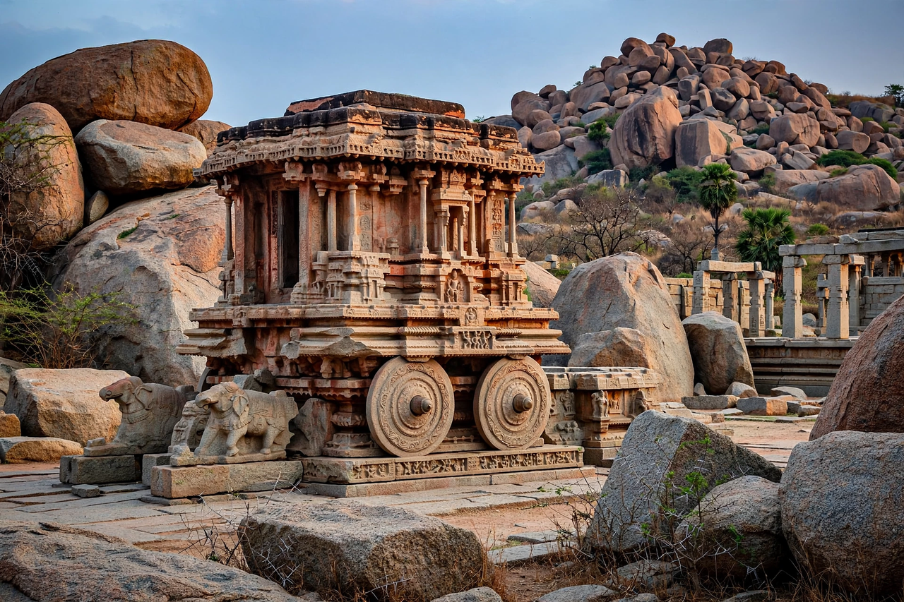

Hampi is a ruined city in the Indian state of Karnataka, the former capital of the Vijayanagara Empire (14th–17th centuries), known in its heyday as Vijayanagara, "City of Victory." Spread across a boulder-strewn landscape on the banks of the Tungabhadra River, it was one of the largest and richest cities in the world around 1500, before its destruction after the Battle of Talikota in 1565. The Group of Monuments at Hampi is a UNESCO World Heritage Site.
The site was sacred long before the empire: it is identified with Kishkindha of the Ramayana, and the Virupaksha Temple to Shiva has been in continuous worship since early medieval times. The Vijayanagara kings, above all Krishnadevaraya (r. 1509–1529), filled their capital with temples, palaces, aqueducts, markets and fortifications. Foreign visitors such as the Portuguese travellers Domingo Paes and Fernão Nunes described a city of perhaps half a million people, trading in diamonds, horses, spices and textiles.
Highlights include the Virupaksha Temple with its towering gopuram; the Vittala Temple, famed for its musical pillars and the monolithic stone chariot that appears on the Indian ₹50 banknote; the elephant stables and Lotus Mahal of the royal enclosure; the Hazara Rama temple with its Ramayana reliefs; and great monoliths such as the Lakshmi Narasimha statue. After Talikota the city was sacked and largely abandoned, though worship at Virupaksha never ceased.
See also: Krishnadevaraya · Battle of Talikota